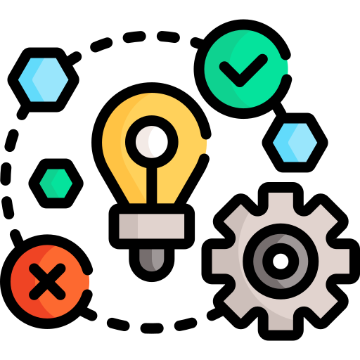

Estudante de Bacharelado em Ciência da Computação - PUCPR
Estudante de Bacharelado em Ciência da Computação - PUCPR
 Raciocínio Algorítmico
Raciocínio Algorítmico
Prof. Fabricio Enembreck
Listas de Exercícios
Ao longo da disciplina, desenvolvemos inúmeras listas de exercícios que nos proporcionaram mais do que aprendizagem teórica, mas sim conhecimento prático sobre elementos fundamentais da linguagem de programação Python.

Jokenpô
Um dos projetos colaborativos desenvolvidos ao longo da disciplina foi a elaboração de um jogo de Jokenpô utilizando a linguagem de programação Python. Em trios, elaboramos e desenvolvemos o código em conjunto, promovendo o trabalho em equipe e a aplicação prática de nossos conhecimentos teóricos.
Máquina de Vendas
No nosso segundo projeto colaborativo, desenvolvemos uma máquina de vendas na qual é possível comprar produtos utilizando cédulas ou moedas, implementamos sistema de troco, estoque e também modo administrador.
 Resolução de Problemas com Lógica Matemática
Prof. Rafaela Otemaier
Listas de Exercícios
Ao longo da disciplina, trabalhamos na resolução de inúmeras listas de exercícios que nos proporcionaram mais do que aprendizagem teórica, mas sim aplicação prática de nossos conhecimentos sobre operadores lógicos, manipulação sintática, regras de inferência, entre outros conceitos lógicos.
Jogo da Tabela Verdade
Tivemos a proposta de desenvolver através da linguagem de Python, estudada em Raciocínio Algorítmico, um jogo sobre a Tabela Verdade vista nas aulas de lógica, o que nos possibilitou unir diferentes conhecimentos destas duas matérias no desenvolvimento de uma aplicação prática e educativa sobre as mesmas.
Experiência Criativa: Navegando na Computação
Prof. Mateus Nunes da Silva
Prof. Luiz Antônio Pavão
Projeto 1 - Jogo
>> Capivara: A máfia selvagem
No nosso primeiro projeto colaborativo, fomos assignados em grupos aleatórios para desenvolver um jogo através do ambiente de desenvolvimento Construct 3. Houve também a atribuição de um líder para cada equipe, sendo eu a líder da minha.
Nossa equipe se dividiu entre diferentes funções a serem realizadas para o desenvolvimento do jogo e por fim realizamos a entrega, a apresentação do jogo em sua versão final, e a publicação do mesmo na plataforma de jogos itch.io. O jogo desenvolvido pela minha equipe foi "Capivara: A máfia selvagem", um jogo de plataforma 2D de ação e aventura que conta com 4 fases, tendo a 2° fase uma dinâmica de mini boss e a 4° e última fase um boss final que encerra a aventura.
Game Design Document
Projeto 2 - Aplicativo Multimídia
>> Plantinha Pomposa
No nosso segundo projeto colaborativo, formamos equipes para desenvolver um aplicativo multimídia, que necessariamente deveria estar de acordo com a seguinte proposta de Extensão Universitária, entitulada de Atitudes que levam a sustentabilidade: abordar a área temática do Meio Ambiente, responder à ODS n° 11 da ONU, corresponder ao pilar Ambiental de ESG e se enquadrar na modalidade de programa de caráter educativo, social, cultural, científico ou tecnológico, com objetivo específico e prazo indeterminado.
O ambiente de desenvolvimento solicitado foi o Processing, utilizando a linguagem de programação Java. Também foi implementado no projeto um mecanismo de JSON.

Projeto 3 - Desenvolvimento Web
>> Jornal Pomposo
Nosso terceiro projeto colaborativo, que ainda está em desenvolvimento, consiste em desenvolver utilizando as linguagens de programação HTML, CSS e JavaScript um aplicativo web simples, sendo permitida a reutilização do projeto 2 para tal desenvolvimento. Nossa equipe foi formada pela mesma equipe do projeto antecedente, e decidimos adaptar elementos do projeto 2 para o desenvolvimento de nosso novo aplicativo.
 Fundamentos de Sistemas Ciberfísicos
Fundamentos de Sistemas Ciberfísicos
Prof. Andrey Cabral Meira
Trabalho discente efetivo sobre Operações de Bitwise e Shift de Bits
Elaboração individual de um artigo explicativo sobre Operações de Bitwise e Shift de Bits, desenvolvendo 5 exemplos para cada operação a fim de facilitar o entendimento do leitor.
TDE - Operações de Bitwise e Shift de BitsProjeto IoT (S4) - ESP32, Atuadores e Sensores
Desenvolvimento colaborativo de um projeto de hardware inicialmente no simulador Wokwi e posteriormente a aplicação física do mesmo utilizando o microcontrolador ESP32 e implementando 3 diferentes tipos de atuadores e de sensores, produzindo também um relátorio ao longo deste processo para registrar de forma mais detalhada e precisa todas as informações do projeto.
Relatório do Projeto ESP 32
Seminário sobre Sistemas Operacionais - Chrome OS
Elaboração colaborativa de um seminário sobre Sistemas Operacionais e a elaboração de um vídeo explicativo sobre um Sistema Operacional específico que foi assignado por forma de sorteio a cada equipe, sendo nosso o Sistema Operacional Chrome OS.

Filosofia
Prof. Fred Carlos Trevisan
Ao longo da disciplina de filosofia, foram realizadas diversos trabalhos discentes efetivos de desenvolvimento de textos que tinham como base argumentos, reflexões e conceitos abordados nas obras dos autores estudados e discutidos em sala, proporciando uma maior reflexão e aprendizagem sobre os mesmos.
Por fim, como trabalho final elaboramos em grupo de um vídeo sobre inteligência artificial com base nos textos de Hawking "A inteligência artificial irá nos superar" e de Harari "Educação: a mudança é a única constante". Realizamos uma análise sobre o futuro de nossa atuação profissional diante das mudanças em curso e como produto final desenvolvemos um vídeo, abordando conceitos trabalhados e nossa reflexão final sobre o assunto.